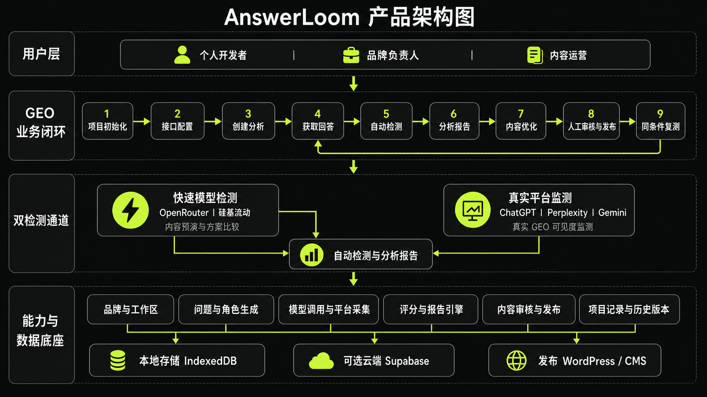
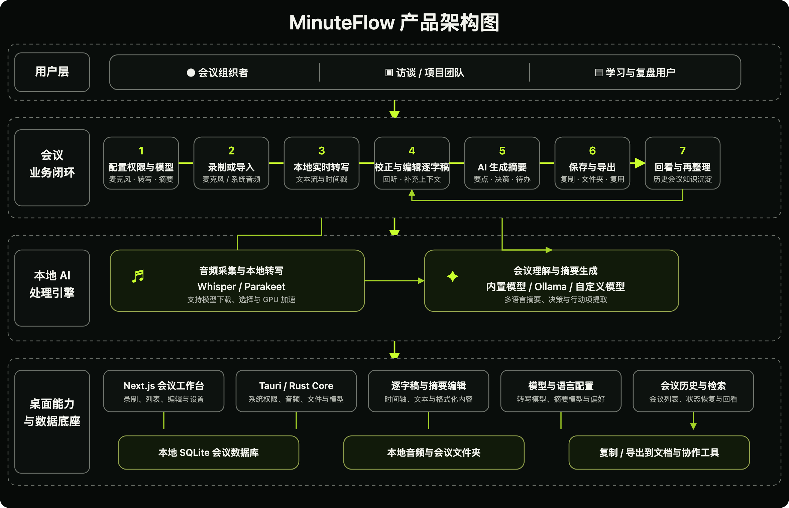
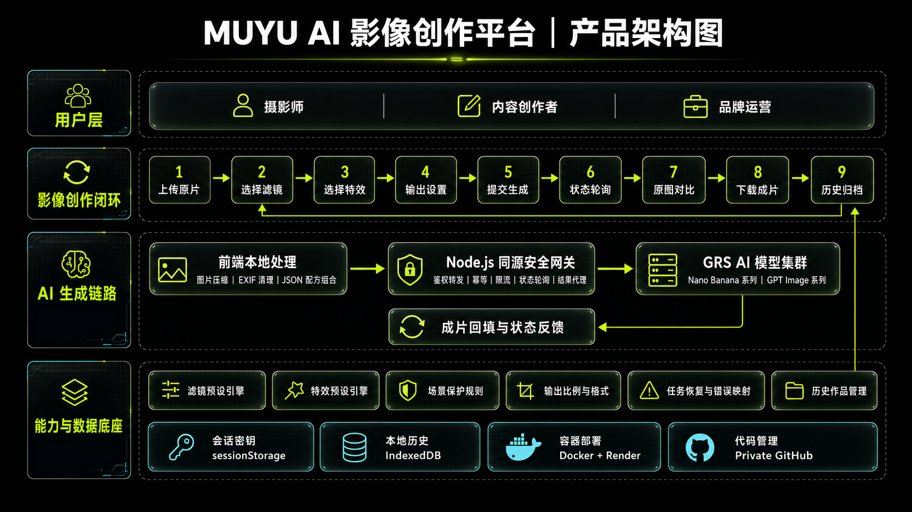

PRODUCT SYSTEMS ATLAS / 2026
产品不是页面。
它是一套会运转的系统。
从用户、业务闭环、AI 链路到数据底座，拆解三款产品如何真正工作。 点击图中的任意节点，查看它的职责、价值和上下游关系。
03AI 产品系统
04架构观察层
70+可解释节点
01 / DIRECTORY
03
GEO INTELLIGENCE WORKSPACE
AnswerLoom
把品牌在 AI 搜索中的表现，从不可见的结果变成可分析、可优化、 可发布、可复测的经营闭环。

02
LOCAL-FIRST MEETING INTELLIGENCE
MinuteFlow
从录音、实时转写、逐字稿校正到 AI 摘要，把一次会议转化为可检索、 可复用、留在本地的组织知识。

01
CONTROLLED AI IMAGE WORKFLOW
MUYU
面向影像创作者的 AI 生产控制台：把图片处理、模型生成、任务轮询、 失败恢复和历史作品统一进一条可控链路。

THREE PRODUCTS / ONE PRODUCT MINDSET